指定字库
1、什么是指定字库
打开字库制作工具
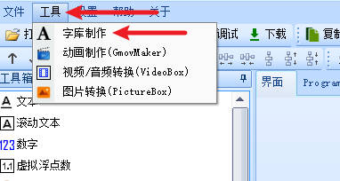
在新建字库时，范围选择指定字符，并且在下方的输入框输入需要的文字，生成的就是指定字库
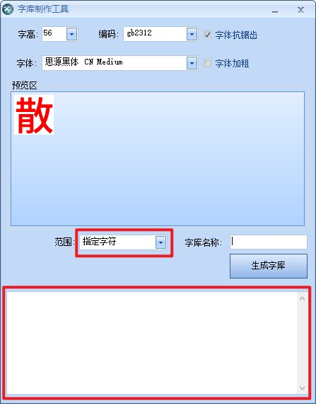
2、指定字库有什么作用
可以大大缩小字库占用的体积
以字高56，编码GB2312，字体为思源，当范围选择所有字符时，生成的文件大小2,683,293字节
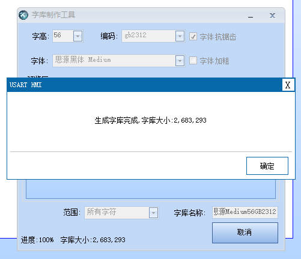
导入工程后该字库占用空间2.56M,占用空间非常大
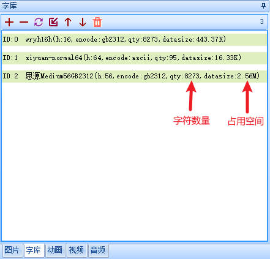
字库占用空间大的原因有两个，一个是字高，一个是字符数量
如果要优化字库占用的空间，要么减小字高，要么减小字符数量
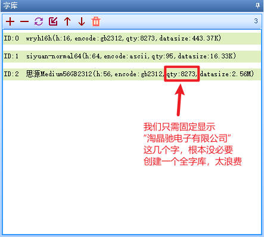
可以看到当范围选择所有字符时，整个字库有8273个字符，几乎包括了所有的汉字，但通常情况下，使用56这么大的字号，通常是作为标题使用，大部分情况下用到的字是很少的，此时我们建议使用指定字符来生成字库
3、如何制作指定字库
如图所示，范围选择指定字符，并且在下方的输入框中输入你需要显示的文字
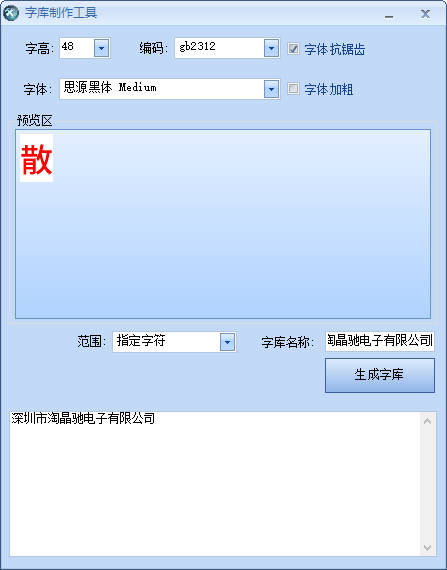
生成的指定字库文件大小3033字节
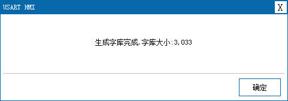
导入工程后该字库占用空间3.7k
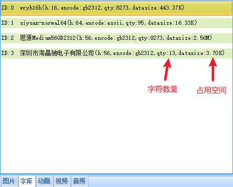
用于显示固定的标题文字
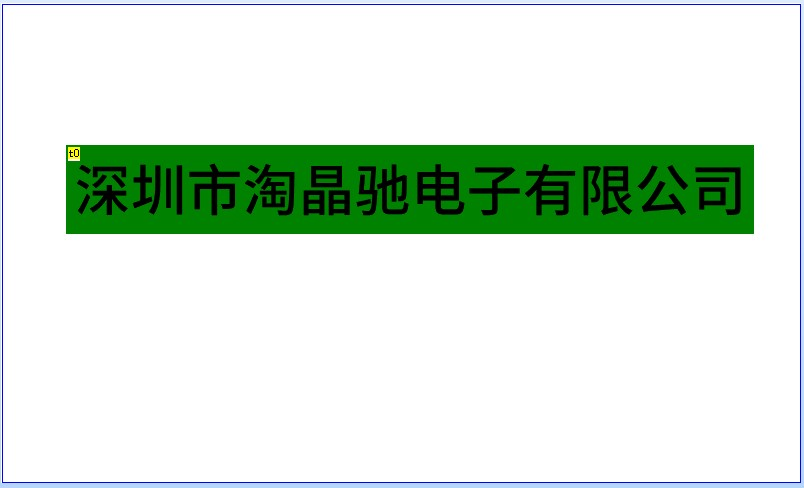
4、修改指定字库
指定字库是可以修改的，使用鼠标双击字库
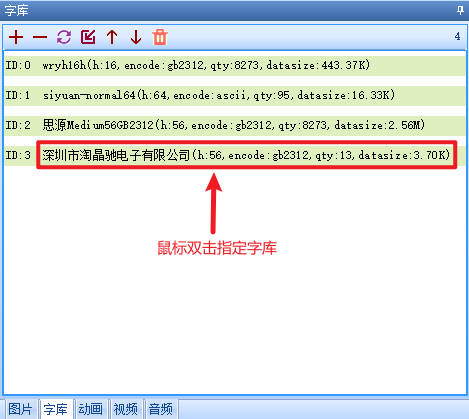
可以看到左下角出现了修改字库的按钮
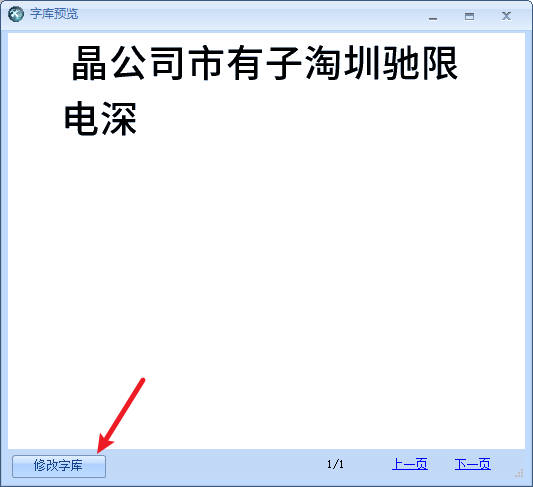